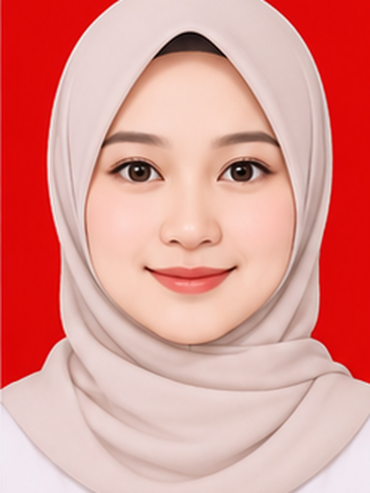
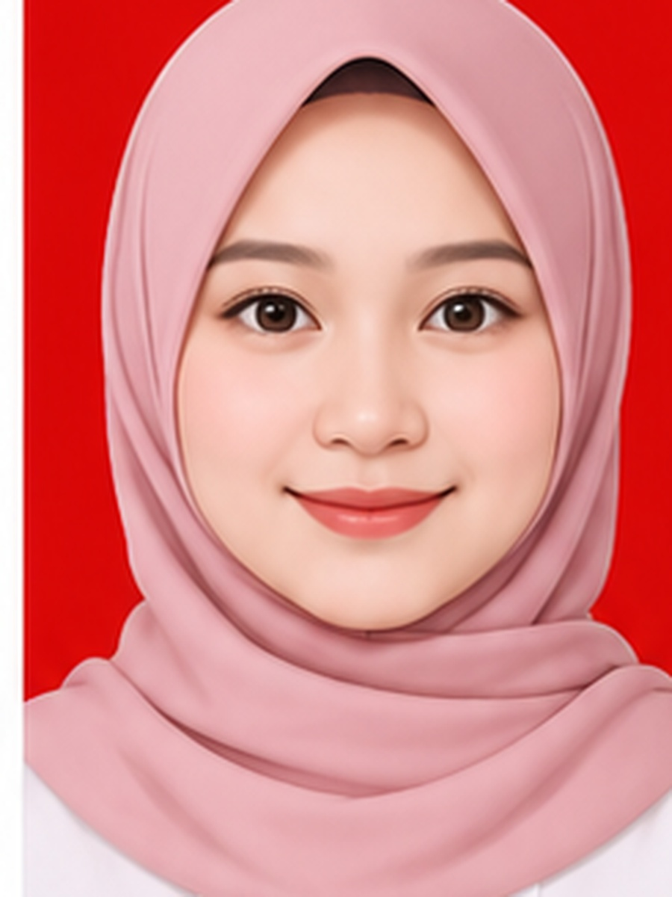
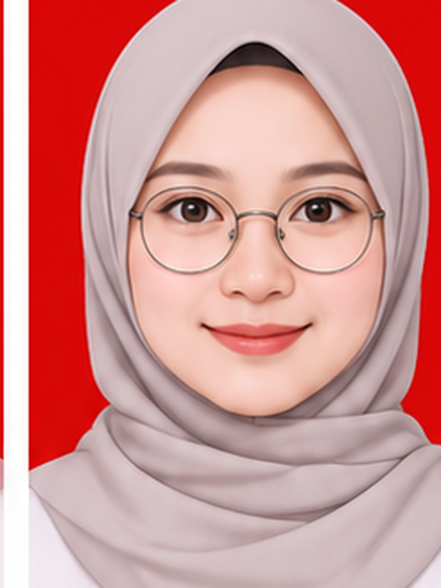
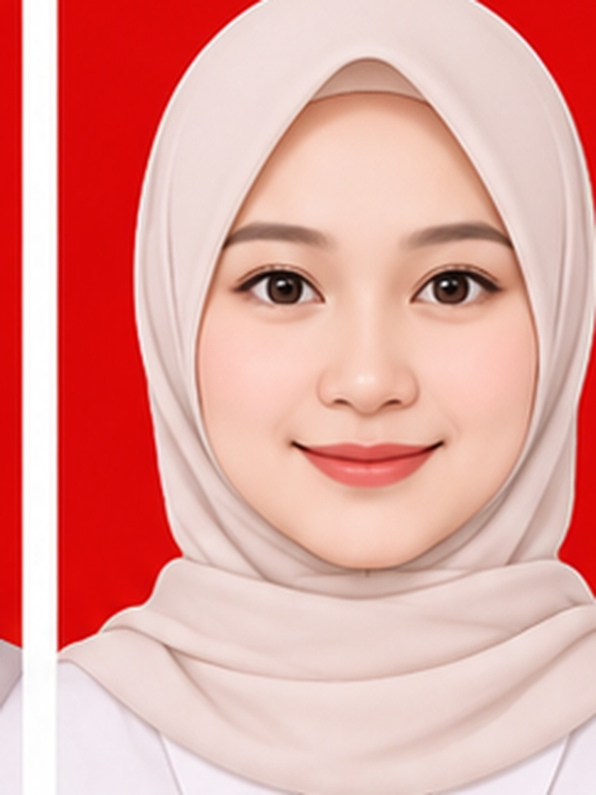
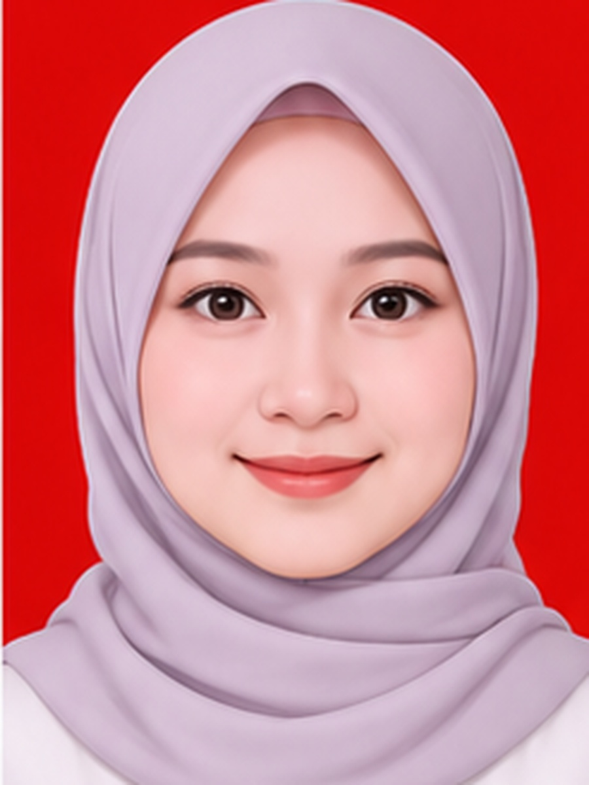
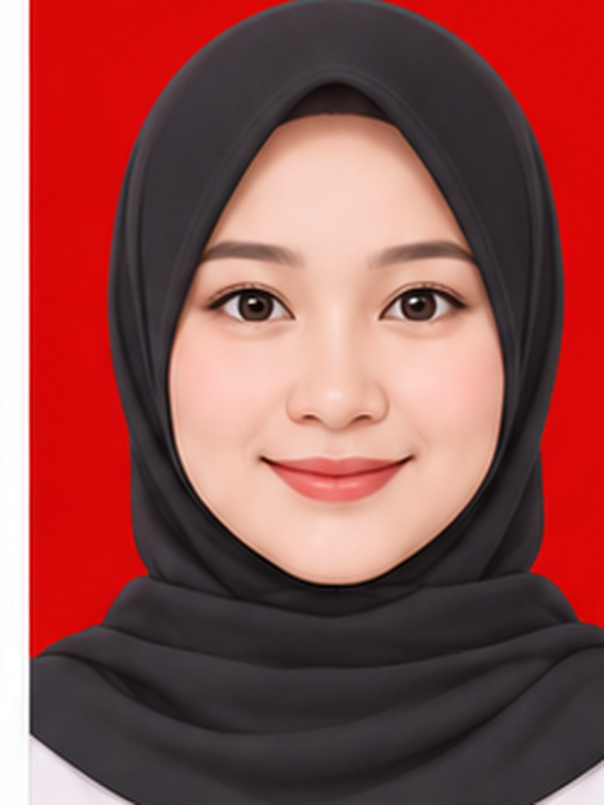
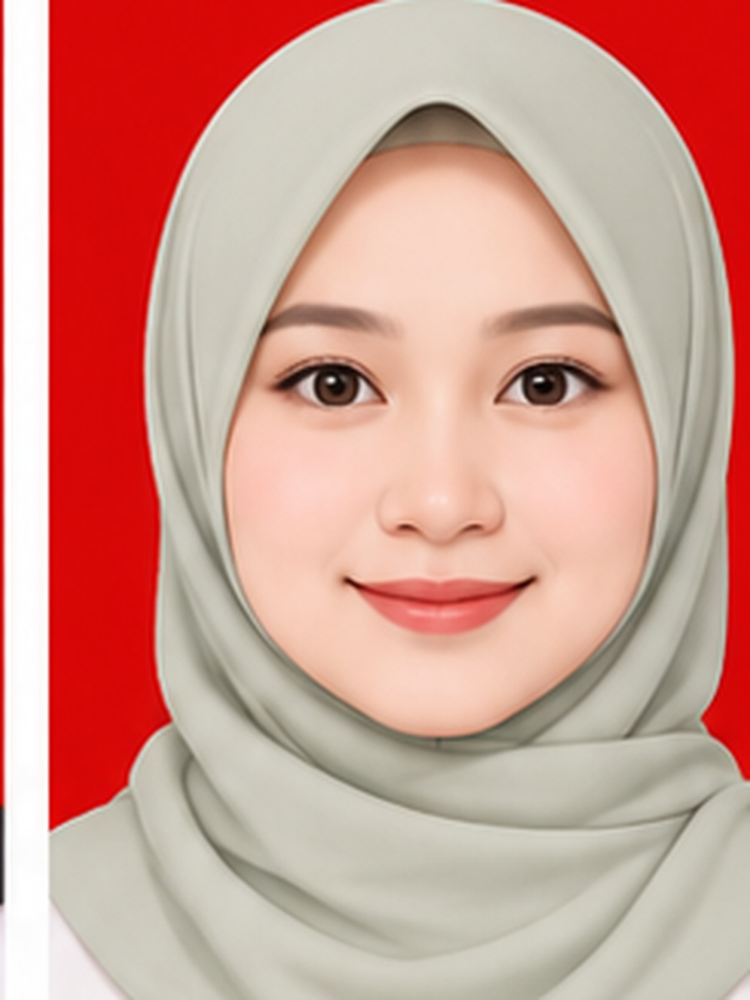
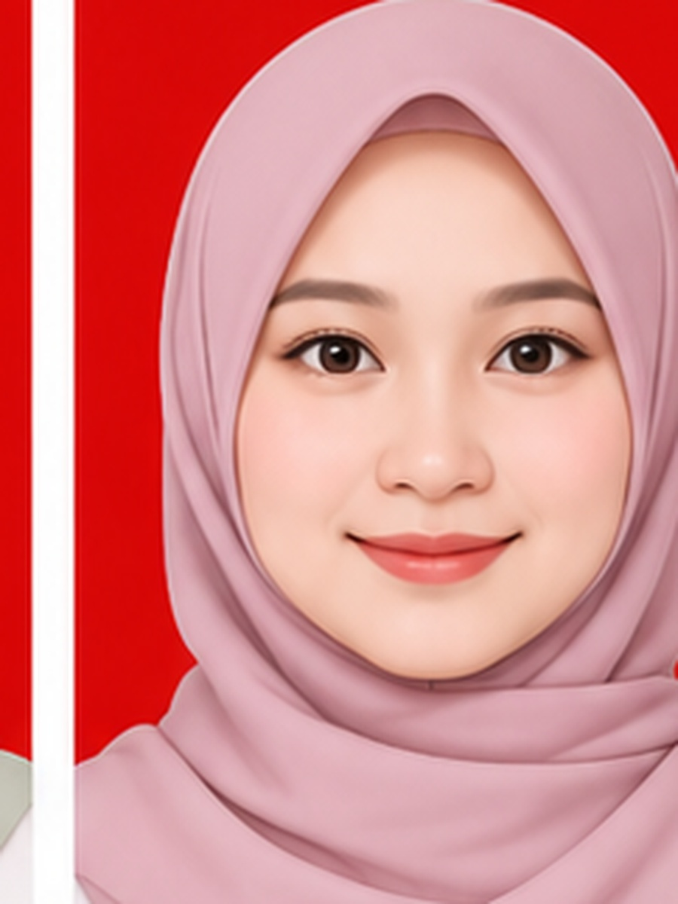
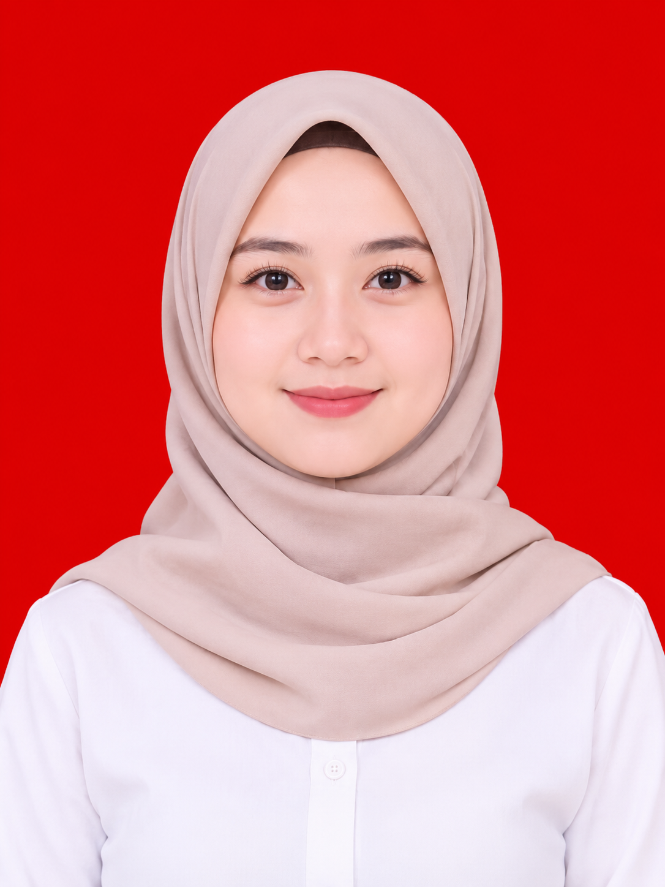
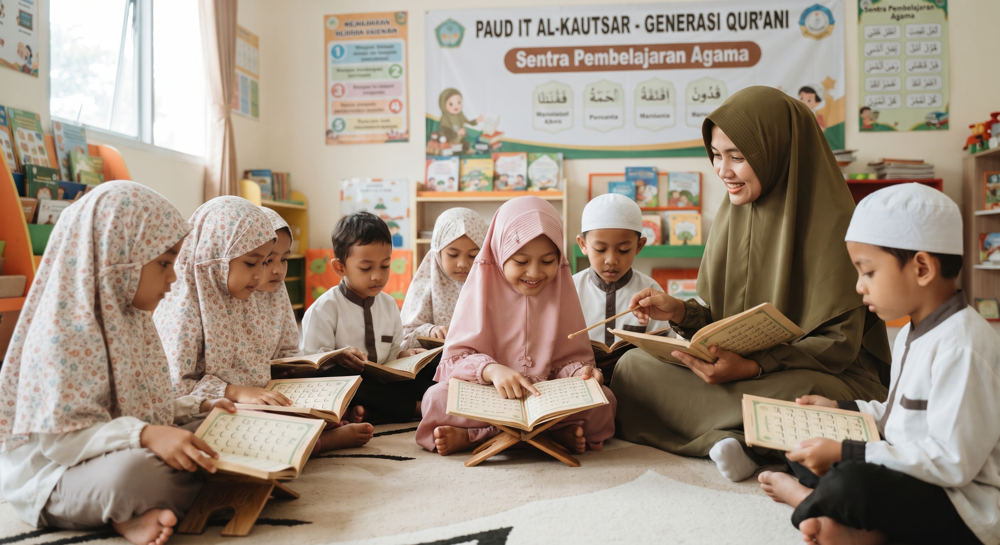

Selamat datang di PAUD IT Al-Kautsar. Kami menghadirkan lingkungan belajar yang Islami, ramah anak, serta inklusif yang terbuka bagi anak reguler maupun Anak Berkebutuhan Khusus (ABK) untuk tumbuh ceria bersama.


"Pendidikan anak usia dini adalah fondasi awal membentuk generasi Qur'ani yang cerdas, berakhlak mulia, dan inklusif."
Mengenal sejarah berdirinya sekolah serta komitmen kami dalam menghadirkan pendidikan inklusif dan Islami.
Berdiri dengan komitmen mendalam terhadap dunia pendidikan anak, PAUD IT Al-Kautsar hadir sebagai lembaga yang memadukan fondasi nilai-nilai Qur'ani dengan layanan pendidikan inklusif yang ramah bagi seluruh anak.
Kami percaya bahwa setiap anak memiliki keunikan dan hak yang sama untuk mendapatkan stimulasi terbaik. Oleh karena itu, kami menyediakan lingkungan belajar yang akomodatif, didampingi oleh guru pendamping khusus (shadow teacher), serta fasilitas yang mendukung tumbuh kembang anak reguler maupun Anak Berkebutuhan Khusus (ABK).
Terbuka untuk anak reguler & ABK.
Membentuk karakter mulia sejak dini.


Komitmen kami dalam membimbing buah hati menggapai masa depan gemilang yang berlandaskan nilai Islam dan inklusivitas.
"Terwujudnya Generasi yang Qur'ani, Cerdas, Berkarakter Mulia, Mandiri, dan Inklusif."
Disesuaikan dengan tahap tumbuh kembang anak untuk merangsang kecerdasan menyeluruh melalui pendekatan sentra.
Fokus pada stimulasi sensorik, sosialisasi awal dengan teman sebaya, kemandirian dasar, serta pengenalan nilai agama melalui bermain.
Persiapan matang masuk SD melalui literasi dini, numerasi menyenangkan, sains sederhana, pembentukan karakter, dan pembiasaan Qur'ani.
Solusi aman bagi orang tua bekerja. Dilengkapi pengasuh profesional, makan siang bergizi seimbang, tidur siang, dan stimulasi harian.
Penerapan model sentra interaktif yang dirancang khusus untuk mengoptimalkan kecerdasan majemuk anak.
Sains, teknologi, teknik, seni, matematika.
Logika spasial dan konstruksi bangunan.
Motorik kasar, kelenturan, kesehatan fisik.
Mengasah empati, sosial, dan imajinasi.
Eksplorasi tekstur dan sains natural.
Keaksaraan awal, bercerita, komunikasi.
Praktik sholat, doa harian, nilai Qur'ani.
Kreativitas estetika & motorik halus.
Wadah pengembangan potensi, kreativitas, dan rasa percaya diri buah hati melalui kegiatan yang menyenangkan.
Menggambar, mewarnai, melukis, serta kerajinan tangan (loose parts) untuk melatih motorik halus dan imajinasi anak.
Menari tradisional, menyanyi, bermain angklung, atau drumband untuk melatih ritme, kekompakan, dan kepekaan rasa.
Futsal ceria, senam, atau game motorik aktif guna mendukung perkembangan motorik kasar dan kesehatan fisik anak.
Fun science (eksperimen sains sederhana yang aman) dan pengenalan robotika dasar menggunakan blok bangunan.
Komitmen kami memberikan layanan pendidikan yang adil, akomodatif, dan ramah bagi Anak Berkebutuhan Khusus (ABK).
Melakukan evaluasi perkembangan anak secara menyeluruh (seperti deteksi dini speech delay atau spektrum autis) sebelum masuk sekolah untuk merancang layanan yang tepat.
Kurikulum reguler dimodifikasi secara khusus agar sesuai dengan kemampuan dan karakteristik unik Anak Berkebutuhan Khusus (ABK).
Penyediaan pendamping khusus (rasio 1:1 atau 1:2) untuk membantu ABK mengikuti kegiatan kelas reguler atau sesi khusus dengan nyaman.
Kegiatan senam, peregangan, atau pola gerak dasar untuk mengaktifkan sistem saraf sensorimotor dan meningkatkan fokus anak.
Penyediaan fasilitas atau jadwal rutin terapi (seperti terapi wicara atau okupasi) bekerja sama dengan tenaga profesional atau psikolog.
Pembagian model kelas, mulai dari kelas reguler penuh dengan adaptasi ringan, kelas gabungan, hingga kelas khusus bagi anak yang memerlukan pendampingan intens.
Saksikan keseruan anak-anak belajar, bernyanyi, senam pagi, dan berkegiatan di PAUD IT Al-Kautsar.
Eksplorasi Pembelajaran
Olah Tubuh & Kesehatan
Tilawati & Doa Harian
Belajar di Luar Sekolah
Dibimbing oleh tenaga pendidik profesional yang berdedikasi tinggi serta terlatih dalam pembelajaran sentra dan pendidikan anak usia dini.
Memimpin visi pendidikan inklusif & karakter Qur'ani.

Mengkoordinasikan kurikulum sentra & manajemen sekolah.

Stimulasi sensorik & sosialisasi awal anak usia 2-4 tahun.

Eksplorasi sains, teknologi & matematika sederhana.

Melatih logika spasial & konstruksi bangunan.

Pengembangan motorik kasar & kesehatan fisik.

Mengasah empati, sosial, dan imajinasi anak.

Eksplorasi tekstur dan sains natural.

Keaksaraan awal, bercerita & komunikasi.

Praktik sholat, doa harian & nilai Qur'ani.

Kreativitas estetika dan motorik halus anak.
Foto-foto keceriaan anak-anak saat belajar, bermain, dan beribadah bersama.
Eksplorasi & Bermain

Pembiasaan Qur'ani

Belajar di Luar Sekolah

Ajang Unjuk Bakat
Cerita nyata dari para orang tua murid tentang perkembangan positif buah hati mereka di PAUD IT Al-Kautsar.
"Anak saya awalnya sangat pemalu dan butuh pendekatan khusus. Alhamdulillah berkat kesabaran guru-guru di PAUD IT Al-Kautsar yang sangat ramah inklusif, sekarang anak saya jadi jauh lebih mandiri, ceria, dan senang menghafal doa harian!"
"Guru-gurunya sangat sabar, penyayang, dan komunikatif. Setiap hari selalu ada laporan kegiatan sentra dan perkembangan mengaji anak. Fasilitas sekolahnya juga sangat bersih, Islami, dan ramah anak. Sangat recommended!"
"Program Daycare di sini sangat membantu kami yang bekerja. Anak mendapatkan makan siang bergizi seimbang, waktu istirahat teratur, serta tetap mendapatkan stimulasi edukasi dan nilai Islami yang menyenangkan."
Daftarkan buah hati Anda sekarang untuk bergabung bersama lingkungan belajar yang Islami, inklusif, dan menyenangkan.
Kami siap menyambut kunjungan Anda di kantor pengelola kampus.
Kampus UNESA Lidah Wetan, Gedung O6 Lantai 1, Lidah Wetan, Kec. Lakarsantri, Surabaya, Jawa Timur 60213
0895-4059-83133 (Admin PPDB)
pauditalkautsar@gmail.com
Gedung O6 Lantai 1, Lakarsantri, Surabaya


Nama: Diah Ayu Septiani
NIM: 23010684126/2023C
Mata Kuliah: Edu-Tech for Young Children
Dosen Pengampu: Ibu Fatiha Khoirotunnisa Elfahmi, M.Ed., M.Pd
Aplikasi yang digunakan: Gemini, Google Flow, Visual Studio Code
Universitas Negeri Surabaya
Fakultas Ilmu Pendidikan
S1 - Pendidikan Guru Pendidikan Anak Usia Dini
2026